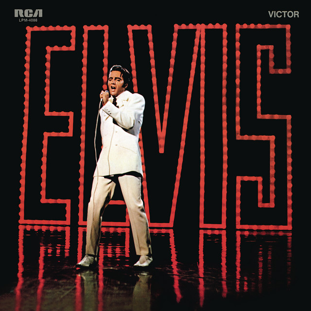

Day 96

Elvis Presley ◆ If I Can Dream ◆ 1968
之前朋友介绍了 Elvis 抒情的歌，比如 Can’t Help Falling in Love With You，我才知道他除了摇滚歌以外还可以这么酥。最近 Spotify 上听了听他的歌单，这首 If I Can Dream 抓住了我，里面蕴含的情感浓郁欲滴。看着歌词又听一遍，把我感动到眼眶湿润。之后查了这首歌当时的背景，感觉更传奇了。
今年还有部 Elvis 的电影，在 Spotify 上看到了原声辑，里面有很多当代歌手改编的 Elvis 的名曲，这种传承致敬也很感动。有时间一定去把电影看了！
Bonus: Elvis Presley: If I Can Dream。他们把 Elvis 的歌重新制作，加上 Royal Philharmonic Orchestra 的 backing，发型了张专辑。这个广播节目讲了一些幕后故事，还放了专辑里的歌，每首都很美！
There must be lights burning brighter somewhere
Got to be birds flying higher in a sky more blue
If I can dream of a better land
Where all my brothers walk hand in hand
Tell me why, oh why, oh why can't my dream come true
Oh why
There must be peace and understanding sometime
Strong winds of promise that will blow away the doubt and fear
If I can dream of a warmer sun
Where hope keeps shining on everyone
Tell me why, oh why, oh why won't that sun appear
We're lost in a cloud
With too much rain
We're trapped in a world
That's troubled with pain
But as long as a man
Has the strength to dream
He can redeem his soul and fly
Deep in my heart there's a trembling question
Still I am sure that the answer, answer's gonna come somehow
Out there in the dark, there's a beckoning candle, yeah
And while I can think, while I can talk
While I can stand, while I can walk
While I can dream
Oh, please let my dream
Come true
Right now
Let it come true right now
Oh yeah